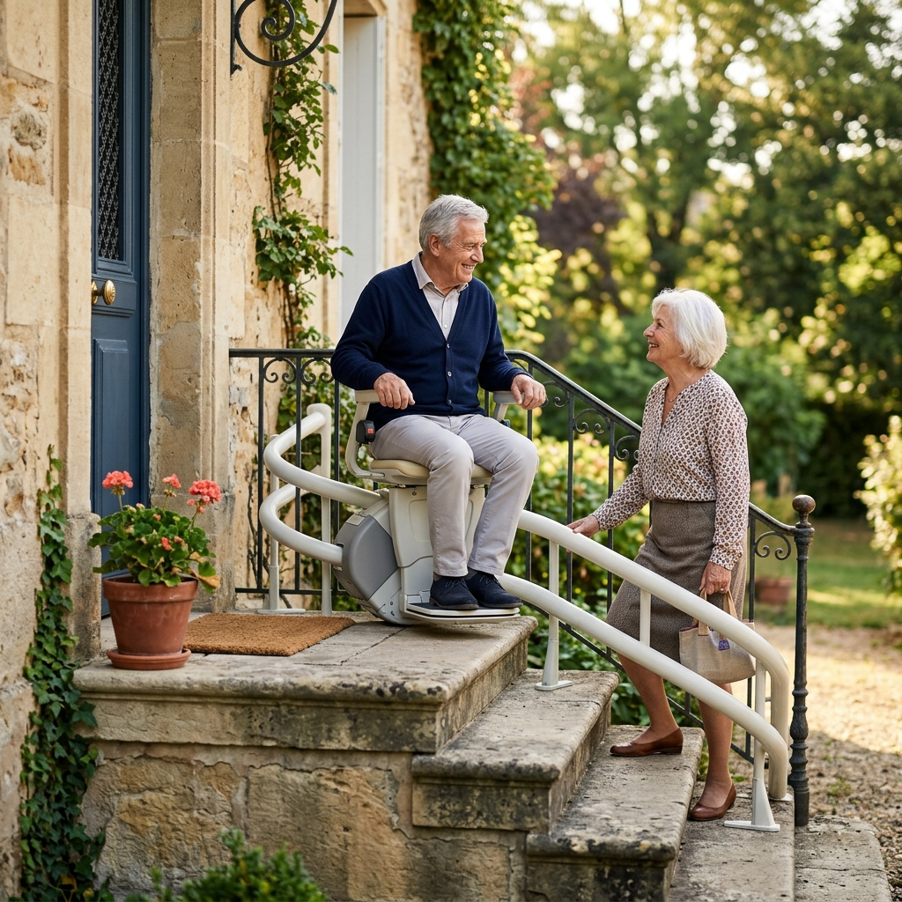

À quoi sert un monte-escalier extérieur ?
Beaucoup de logements français ont leur principal obstacle avant la porte d’entrée : un perron de quelques marches, un jardin en restanques, un garage en contrebas, un accès de terrasse. Le monte-escalier extérieur rétablit ce trajet quotidien — chercher le courrier, sortir la poubelle, recevoir de la visite — sans dépendre d’un tiers.
Le principe est identique à l’intérieur : un siège motorisé se déplace sur un rail fixé aux marches. La différence tient aux matériaux (aciers traités, selleries imputrescibles, commandes étanches) et à l’environnement, qui impose quelques vérifications supplémentaires détaillées ci-dessous. Pour les bases communes aux deux usages, voyez notre page Monte-escalier.
Droit ou tournant : la même logique qu’à l’intérieur
Un perron rectiligne appelle un rail droit standard — la configuration extérieure la plus courante et la plus économique. Un cheminement qui contourne la maison, longe un muret ou enchaîne deux volées exige un rail tournant cintré sur mesure, avec les mêmes conséquences que dedans : relevé laser, fabrication de plusieurs semaines, budget supérieur. Le raisonnement complet est dans notre guide droit ou tournant.
Particularité extérieure : le rail peut suivre un cheminement plus long qu’un simple escalier — par exemple une rampe de jardin en pente douce — tant que la fixation au sol est possible sur toute la longueur.
Pluie, gel, soleil : comment l’appareil est protégé
Les modèles extérieurs des grands fabricants sont conçus pour rester dehors toute l’année : composants électriques protégés contre les projections d’eau, siège et commandes en matériaux résistants aux UV, rail traité contre la corrosion. Mais le niveau exact de protection (indice IP, plage de température garantie) varie selon les marques et les modèles : exigez la notice du modèle proposé plutôt qu’une promesse générale.
- ·La housse de protection — généralement fournie ou fortement recommandée : elle couvre siège et commandes en stationnement et prolonge nettement la durée de vie de la sellerie. Vérifiez qu’elle reste simple à mettre et retirer pour l’utilisateur.
- ·Le stationnement — prévoyez un point de charge abrité si possible (auvent, angle protégé) ; certains modèles proposent un point de parking déporté en bout de rail.
- ·La clé de contact — standard sur les modèles extérieurs : elle empêche l’utilisation par des enfants ou des passants quand l’appareil est accessible depuis la rue.
- ·La batterie — l’appareil roule sur batteries rechargées aux points de stationnement ; le froid réduit leur autonomie et leur durée de vie. Un remplacement un peu plus fréquent qu’à l’intérieur est à anticiper selon l’exposition.
Bord de mer — l’air salin accélère la corrosion : signalez la proximité du littoral dès la demande de devis, certains fabricants proposent des traitements renforcés et adaptent les conditions de garantie.
Le terrain : ce que la visite technique regarde dehors
- ·La surface de départ et d’arrivée — il faut un espace stable et plan pour monter et descendre du siège en sécurité, éventuellement à créer (dallage, platelage).
- ·La fixation — le rail s’ancre dans les marches : béton et pierre saine conviennent très bien ; des marches fissurées, descellées ou en terre battue demandent une reprise préalable.
- ·L’évacuation de l’eau — l’eau ne doit pas stagner au pied du rail ni sur les zones d’embarquement (gel en hiver, glissance toute l’année).
- ·Portillon, porte, passage — comme à l’intérieur, le rail ne doit bloquer ni un portillon ni un passage ; un rail relevable ou un tracé ajusté règle la plupart des cas.
- ·La largeur — mêmes ordres de grandeur qu’à l’intérieur (à partir d’environ 70 cm utiles) ; les escaliers extérieurs sont souvent plus généreux.
- ·L’alimentation électrique — une alimentation protégée adaptée à l’extérieur est nécessaire pour les points de charge ; sa création est un poste annexe fréquent du devis.
Entretien, garantie, dépannage
Un appareil extérieur vit plus durement qu’un appareil intérieur : l’entretien annuel (contrôle du rail, des fixations, de la batterie, graissage) y est d’autant plus recommandé. Trois points à examiner dans le contrat :
- ·La garantie couvre-t-elle explicitement l’usage extérieur, sellerie et corrosion comprises ?
- ·Quel est le délai d’intervention en cas de panne — l’appareil conditionne l’accès au logement ?
- ·Un nettoyage régulier (feuilles, sable sur le rail) et la housse en stationnement font partie des conditions d’usage : qui s’en chargera au quotidien ?
Prix d’un monte-escalier extérieur
Estimations nationales 2026Le surcoût par rapport à l’équivalent intérieur (traitements, housse, alimentation extérieure) reste modéré ; c’est la forme du tracé qui domine le budget, comme le détaille notre guide des prix.
Aides possibles et alternatives
L’accès au logement fait partie des adaptations concernées par les aides : MaPrimeAdapt’ (50 à 70 % des dépenses éligibles, sous conditions), APA, PCH et compléments locaux peuvent s’appliquer à un équipement extérieur au même titre qu’intérieur — dispositif par dispositif dans notre guide Quelles aides pour un monte-escalier ?. Ne commencez pas les travaux avant les accords.
Alternatives à comparer selon la configuration : une rampe en pente douce (quelques marches basses, usage fauteuil ou déambulateur), une plateforme élévatrice verticale (dénivelé court, usage fauteuil), ou le déplacement de l’usage au rez-de-chaussée quand l’obstacle extérieur se cumule avec un étage. Un professionnel sérieux doit pouvoir chiffrer l’option la plus simple, pas seulement la plus chère.
Checklist avant la visite technique
- ✓Nombre de marches et forme du cheminement (photos utiles)
- ✓Matériau des marches (béton, pierre, bois) et leur état
- ✓Exposition : plein sud, gel fréquent, littoral
- ✓Présence d’une alimentation électrique extérieure
- ✓Espace disponible en haut et en bas pour embarquer
- ✓Portillon, portail ou passage à préserver
- ✓Qui mettra la housse et nettoiera le rail au quotidien
- ✓Accès visible depuis la rue → clé de contact indispensable
Étudier mon projet de monte-escalier extérieur
Décrivez votre accès extérieur et indiquez votre code postal pour vérifier les solutions disponibles dans votre secteur. Gratuit et sans engagement.
Questions fréquentes sur l’usage extérieur
Un monte-escalier extérieur peut-il vraiment rester dehors toute l’année ?
Oui, c’est sa raison d’être : les modèles extérieurs sont traités contre l’humidité, les UV et la corrosion. La housse en stationnement et un entretien annuel restent nécessaires pour tenir cette promesse dans la durée.
Fonctionne-t-il en cas de gel ?
Les modèles extérieurs sont conçus pour fonctionner par temps froid, mais chaque fabricant garantit une plage de température précise — vérifiez-la dans la notice du modèle proposé. Le point sensible est surtout la glace sur les zones d’embarquement : l’évacuation de l’eau compte autant que l’appareil.
La housse est-elle obligatoire ?
Elle est généralement exigée ou fortement recommandée par le fabricant pour la sellerie et les commandes en stationnement. Sans elle, l’usure s’accélère et certaines garanties peuvent être discutées. Testez sa manipulation lors de la démonstration.
Quelqu’un peut-il utiliser l’appareil depuis la rue ?
Non si la clé de contact est retirée : sans elle, l’appareil est verrouillé. C’est l’équipement de série qui distingue le plus l’extérieur de l’intérieur, avec la housse.
Faut-il une prise électrique dehors ?
Oui, une alimentation protégée adaptée à l’extérieur pour recharger les batteries aux points de stationnement. Sa création (150 à 500 € selon la distance au tableau) est le travail annexe le plus fréquent de ces projets.
Existe-t-il des monte-escaliers extérieurs d’occasion ?
Le marché est encore plus étroit qu’en intérieur : au rail à géométrie unique s’ajoute l’usure spécifique de l’exposition. Vérifiez l’état réel des composants et qui garantit la repose — notre guide occasion ou location détaille les précautions.
Quelle durée de vie pour un appareil exposé ?
Avec housse et entretien annuel, un modèle extérieur de qualité vise la même longévité qu’un intérieur (une dizaine d’années) ; les batteries se remplacent un peu plus souvent selon l’exposition au froid. Sans entretien, l’écart se creuse vite.
Les aides s’appliquent-elles aussi à un équipement extérieur ?
Oui : l’accès au logement fait partie de l’adaptation du domicile. MaPrimeAdapt’, APA ou PCH peuvent concerner un monte-escalier extérieur dans les mêmes conditions qu’un intérieur, accords préalables compris.